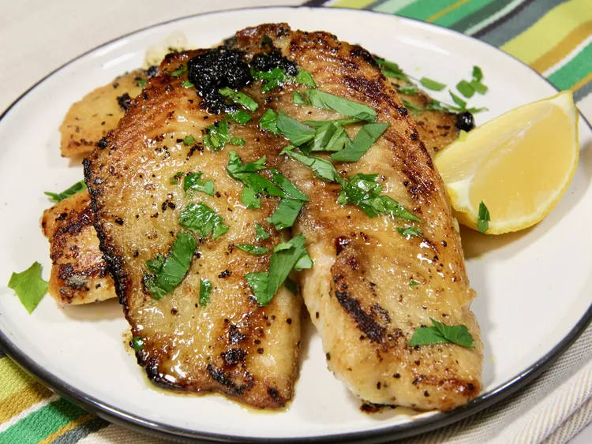

Sole Meuniere

Sole meuniere is a classic French dish where sol filets are cooked and served in a rich, buttery sauce. It also has the benefit of being super fast and easy. You can replace the sole, which can be tough to find, with cod, whiting or any other white flaky fish.
Ingredients
- 6 sole fillets
- 1 cup all purpose flour
- 1 tablespoon salt, divided, or to taste
- 1 teaspoon ground black pepper
- 1/2 cup butter
- 2 tablespoons freshly-squeezed lemon juice
- 1 teaspoon lemon zest
- 3 tablespoons chopped parsley
- 1 lemon, cut into wedges (optional)
Directions
- Combine flour, 1 ½ teaspoons salt, and pepper in shallow bowl and whisk together.
- Pat sole filets dry with paper flowers and dredge in flour mixture, shaking off excess
- Melt butter in a large skillet over medium heat. Add filets to the hot butter and cook for 1 minute. Add lemon juice and lemon zest and cook until well browned on first side, 2 to 3 more minutes. Carefully turn fillets using 2 spatulas and cook until fish flakes easily with a fork, 1 to 2 minutes longer, tossing lemon butter mixture over the fish as it cooks.
- Remove fish from pan and stir parsley into butter sauce. Season with remaining salt to taste. Stir and whisk together, then ladle butter sauce over fish fillets. Serve immediately with lemon wedges.